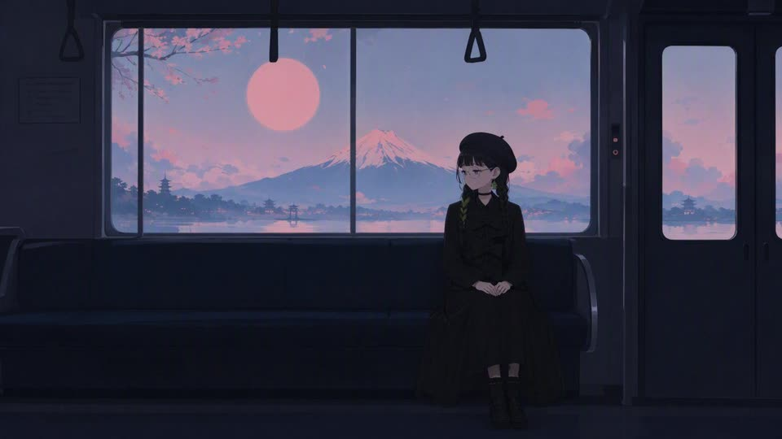

Anime Train at Dusk with Mount Fuji
AES-009Aesthetic / GenreGPT Image 2by ChiyoSeptember

A moody anime train interior scene with a lone gothic girl silhouetted against a pastel Mount Fuji sunset, useful for cinematic wallpaper art.
Prompt
Create a cinematic anime-style illustration of a quiet train interior at dusk, with a melancholic, dreamlike atmosphere. The scene is viewed from inside an almost empty commuter train, looking across a long dark blue bench seat and large rectangular windows. A single petite teenage girl sits near the right side of the bench, hands folded in her lap, gazing slightly to the side with a calm, lonely expression. She wears an all-black gothic-inspired outfit: black beret, dark blouse with ribbon details, long black skirt, dark socks, and black lace-up boots; her {argument name="hair color" default="black"} hair is styled in two long braids, and she has pale skin and delicate anime facial features. Through the train windows, show a serene Japanese lakeside landscape with {argument name="mountain" default="Mount Fuji"} centered in the distance, reflected softly in the water, with small pagoda silhouettes and treetops along the shore. The sky outside is pastel twilight with lavender-blue tones, pink clouds, and one large round {argument name="sun or moon" default="pink setting sun"} glowing near the upper left window; include a few pink cherry blossom branches and petals near the top left. Inside the train, keep the lighting very dim and cool, with the girl mostly in shadow against the glowing scenery outside. Include exactly three visible hanging train straps near the ceiling, one large multi-pane window set behind the bench, and one train door with tall narrow windows on the right. Use a wide 16:9 composition, soft painterly cel-shaded anime rendering, muted navy interior shadows, pastel pink and blue exterior light, no text, no watermark, no extra passengers.Tags: anime